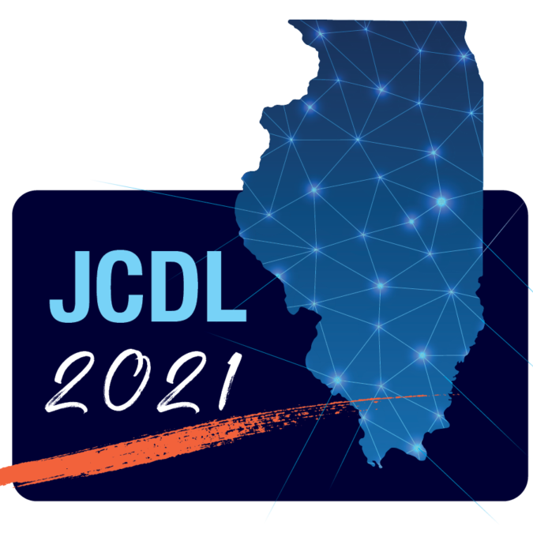
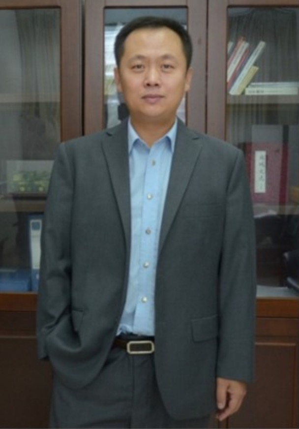

2nd Workshop on Extraction and Evaluation of Knowledge Entities from Scientific Documents (EEKE2021)
at the ACM/IEEE Joint Conference on Digital Libraries 2021 (JCDL2021), Online

News : Since JCDL wll host EEKE, at least one author per paper must register, see instructions here <https://2021.jcdl.org/registration/>. Deadline for Regular Registration is Sept 28.
News : Prof. Dr. Heiko Paulheim and Dr.Gong Chen will give a keynote presentation respectively.
Keynote by Prof. Dr. Heiko Paulheim (DSchool of Business Informatics and Mathematics, University of Mannheim): From Wikis to Knowledge Graphs: Approaches and Challenges beyond DBpedia and YAGO
Keynote by Dr. Gong Cheng (Department of Computer Science and Technology, Nanjing University.): Entity Summarization: Where We Are and What Lies Ahead?
Accepted Papers
The following papers have been accepted and will be presented at EEKE2021.
Long Papers
- ANEA: Automated (Named) Entity Annotation for German Domain-Specific Texts (Anastasia Zhukova, Felix Hamborg and Bela Gipp)
- Detecting Cross-Language Plagiarism using Open Knowledge Graphs (Johannes Stegmüller, Fabian Bauer-Marquart, Norman Meuschke, Terry Ruas, Moritz Schubotz and Bela Gipp)
- Design and Implementation of Keyphrase Extraction Engine for Chinese Scientific Literature (Liangping Ding, Zhixiong Zhang, Huan Liu and Yang Zhao).
Short Papers
- A PICO-based Knowledge Graph for Representing Clinical Evidence (Yongmei Bai, Huage Sun and Jian Du)
- Joint Entity and Relation Extraction from Scientific Documents: Role of Linguistic Information and Entity Types (Santosh Tokala Yaswanth Sri Sai, Prantika Chakraborty, Sudakshina Dutta, Debarshi Kumar Sanyal and Partha Pratim Das)
- Extracting Domain Entities from Scientific Papers Leveraging Author Keywords (Jiabin Peng and Guo Chen)
- A knowledge graph completion model integrating entity description and network structure (Chuanming Yu, Zhengang Zhang and Lu An)
- Keyword Extraction and Technology Entity Extraction for Disruptive Technology Policy Texts (Aofei Chang, Bolin Hua and Dahai Yu)
- Classification of URLs Citing Research Artifacts in Scholarly Documents based on Distributed Representations (Masaya Tsunokake and Shigeki Matsubara)
Poster Papers
- The correlation between content novelty and scientific impact (Shiyun Wang, Jin Mao and Yaxue Ma)
- Automatic Generation of Research Highlights from Scientific Abstracts (Tohida Rehman, Debarshi Kumar Sanyal, Samiran Chattopadhyay, Plaban Kumar Bhowmick and Partha Pratim Das)
- Differential Analysis on Performance of Scientific Research Teams based on Analysis of the Popularity Evolution of Entities (Fang Tan, Tongyang Zhang and Jian Xu)
- Research on extraction of thesis research conclusion sentences in academic literature (Litao Lin, Dongbo Wang and Si Shen)
- Topic Evolution Path and Semantic Relationship Discovery Based on Patent Entity Relationship (Jinzhu Zhang and Linqi Jiang)
- Bureau for Rapid Annotation Tool: Collaboration can do More over Variety-oriented Annotations (Wang Zheng and Xu Shuo)
Call for Papers
You are invited to participate in the 2nd Workshop on Extraction and Evaluation of Knowledge Entities from Scientific Documents (EEKE2021), to be held as part of the ACM/IEEE Joint Conference on Digital Libraries 2021, September 27-30, 2021, Online (Due to the Global Pandemic)
https://eeke-workshop.github.io/2021
Aim of the Workshop
In the era of big data, massive amounts of information and data have dramatically changed human civilization. The broad availability of information provides more opportunities for people, but there has appeared a new challenge: how can we obtain useful knowledge from numerous information sources. A knowledge entity is a relatively independent and integral knowledge module in a special discipline or a research domain [1]. As a crucial medium for knowledge transmission, scientific documents that contain a large number of knowledge entities attract the attention of scholars [2]. In scientific documents, knowledge entities refer to the knowledge mentioned or cited by authors, such as algorithms, models, theories, datasets and software, which reflect the various resources used by the authors in solving problems. Extracting knowledge entities from scientific documents in an accurate and comprehensive way becomes a significant topic. We may recommend documents related to a given knowledge entity (e.g. LSTM model) for scholars, especially for beginners in a research field. DARPA has recently launched the ASKE (Automating Scientific Knowledge Extraction) project [3], which aims to develop next-generation applications of artificial intelligence.
Therefore, the goal of this workshop is to engage the related communities in open problems in the extraction and evaluation of knowledge entities from scientific documents. At present, scholars have used knowledge entities to construct general knowledge-graphs [4] and domain knowledge-graphs [5]. Data sources for these studies include text (news, policy files, email, etc.) and multimedia (video, image, etc.) data. Compared to existing research and workshops like Joint workshop on Bibliometric-enhanced Information Retrieval and Natural Language Processing for Digital Libraries (BIRNDL) [6] or Workshop on Mining Scientific Publications (WOSP) [7], this workshop aims to extract knowledge entities from scientific documents, and explore the feature of entities to conduct practical applications. The results of this workshop are expected to provide scholars, especially early career researchers, with knowledge recommendations and other knowledge entity-based services.
Workshop Topics
This workshop will be relevant to scholars in computer and information science, specialized in Information Extraction, Text Mining, NLP, IR and Digital Libraries. It will also be of importance for all stakeholders in the publication pipeline: implementers, publishers and policymakers. This workshop entitles this cutting-edge and cross-disciplinary direction Extraction and Evaluation of Knowledge Entity, highlighting the development of intelligent methods for identifying knowledge claims in scientific documents, and promoting the application of knowledge entities. We invite stimulating research on topics including, but not limited to, methods of knowledge entity extraction and applications of knowledge entity. Specific examples of fields of interest include:
- Extraction knowledge and entity from scientific documents
- Model and algorithmize entity extraction from scientific documents
- Dataset and metrics mention extraction from scientific documents
- Software and tool extraction from scientific documents [8]
- Construction of a knowledge entity graph and roadmap [9]
- Knowledge entity summarization
- Relation extraction of knowledge entity
- Construction of a knowledge base of knowledge entities
- Bibliometrics of knowledge entity
- Evaluation of knowledge entity in the scientific documents
- Application of knowledge entity extraction
Programme
1st Keynote: From Wikis to Knowledge Graphs: Approaches and Challenges beyond DBpedia and YAGO
Abstract: Wikipedia was among the first sources to be identified for automatic knowledge graph construction. DBpedia and YAGO, two of the most widely used public knowledge graphs, perform knowledge extraction from Wikipedia by following the "one entity per Wiki page" paradigm. Thus, the resulting graphs are naturally limited by the coverage of Wikipedia, and they inherit many biases from it. In my talk, I will introduce recent alternatives for creating knowledge graphs from Wikis, in particular DBkWik and CaLiGraph, which use different approaches for identifying entities, and I will point out several challenges that exist off the beaten path of the "one entity per Wiki page" approaches.
 Dr. Heiko Paulheim is a professor for Data Science at the University of Mannheim, Germany. His research focuses on the construction and usage of large-scale knowledge graphs. He explores methods for generating those knowledge graphs from various sources (such as Wikis and other structured Web sites or parts thereof), as well as techniques for automatically refining those graphs by inferring missing knowledge or finding errors by means of heuristic inference or machine learning. Moreover, he takes a holistic view on knowledge graph construction and refinement by trying to explicate and leverage meta-knowledge on the knowledge construction process and lifecycle. From an application perspective, he analyses and explores the usage of knowledge graphs to improve the performance of different knowledge-intensive tasks. Here, he has developed methods for exploiting public knowledge graphs as background knowledge in data mining tasks, both using symbolic and subsymbolic methods, most notably RDF2vec. Heiko holds a PhD from the Technical University of Darmstadt. (http://www.heikopaulheim.com/)
Dr. Heiko Paulheim is a professor for Data Science at the University of Mannheim, Germany. His research focuses on the construction and usage of large-scale knowledge graphs. He explores methods for generating those knowledge graphs from various sources (such as Wikis and other structured Web sites or parts thereof), as well as techniques for automatically refining those graphs by inferring missing knowledge or finding errors by means of heuristic inference or machine learning. Moreover, he takes a holistic view on knowledge graph construction and refinement by trying to explicate and leverage meta-knowledge on the knowledge construction process and lifecycle. From an application perspective, he analyses and explores the usage of knowledge graphs to improve the performance of different knowledge-intensive tasks. Here, he has developed methods for exploiting public knowledge graphs as background knowledge in data mining tasks, both using symbolic and subsymbolic methods, most notably RDF2vec. Heiko holds a PhD from the Technical University of Darmstadt. (http://www.heikopaulheim.com/)
2nd Keynote: Entity Summarization: Where We Are and What Lies Ahead?
Abstract: Semantic data such as knowledge graphs, describing entities with property values, are increasingly available on the Web. A large number of property values describing an entity may overload users with excessive amounts of information. One solution is to generate a summary (e.g., a small subset of key property values) for entity descriptions to satisfy users' information needs efficiently and effectively. This research topic, termed Entity Summarization, has received considerable attention in the past decade. In this talk, I will review existing methods and evaluation efforts on entity summarization. I will categorize existing methods by presenting a hierarchy of technical features that have been incorporated, including generic, domain-specific, and task-specific features. I will show various frameworks for combining multiple features to assemble a full entity summarizer, including graph-based models, grouping, re-ranking, and combinatorial optimization. I will particularly highlight some pioneering deep learning based methods. Finally, I will discuss limitations of existing methods and, based on that, I will suggest several directions for future research.
Dr. Gong Cheng is an associate professor at the Department of Computer Science and Technology, Nanjing University. He has been conducting research in Semantic Web and knowledge graphs for intelligent software systems. His research interests include semantic search, data summarization, and question answering. His research has been published at WWW, ISWC, TKDE, etc., and has received or been nominated for 5 best paper awards. He was a Posters & Demos co-chair of ISWC 2019. (http://ws.nju.edu.cn/wiki/Gong Cheng)
Sessions
The workshop will be held on Sept 30, 2021 (Beijing Time), and specific activities include keynotes, paper presentations and a poster session.
| 15:20-15:30 | Connection setup: we will provide details | ||
|---|---|---|---|
| 15:30-15:40 | Introduction | Co-Chairs of EEKE2021 (Chengzhi Zhang, Philipp Mayr, Wei Lu, Yi Zhang) | |
| 15:40-16:40 | Keynote 1: From Wikis to Knowledge Graphs: Approaches and Challenges beyond DBpedia and YAGO | Heiko Paulheim | Chair: Philipp Mayr |
| 16:40-17:30 | Session 1: Entity Extraction and Application | Chair: Philipp Mayr | |
| 16:40-17:00 | ANEA: Automated (Named) Entity Annotation for German Domain-Specific Texts | Anastasia Zhukova, Felix Hamborg and Bela Gipp | |
| 17:00-17:15 | Joint Entity and Relation Extraction from Scientific Documents: Role of Linguistic Information and Entity Types | Santosh Tokala Yaswanth Sri Sai, Prantika Chakraborty, Sudakshina Dutta, Debarshi Kumar Sanyal and Partha Pratim Das | |
| 17:15-17:30 | Classification of URLs Citing Research Artifacts in Scholarly Documents based on Distributed Representations | Masaya Tsunokake and Shigeki Matsubara | |
| 17:30-18:30 | Break | ||
| 18:30-19:20 | Session 2: Keyword Exaction and Applicaiton | Chair: Yingyi Zhang | |
| 18:30-18:50 | Design and Implementation of Keyphrase Extraction Engine for Chinese Scientific Literature | Liangping Ding, Zhixiong Zhang, Huan Liu and Yang Zhao | |
| 18:50-19:05 | Keyword Extraction and Technology Entity Extraction for Disruptive Technology Policy Texts | Aofei Chang, Bolin Hua and Dahai Yu | |
| 19:05-19:20 | Extracting Domain Entities from Scientific Papers Leveraging Author Keywords | Jiabin Peng and Guo Chen | |
| 19:20-20:20 | Keynote 2: Entity Summarization: Where We Are and What Lies Ahead? | Gong Cheng | Chair: Chengzhi Zhang |
| 20:20-20:30 | Break | ||
| 20:30-21:20 | Session 3: Knowledge Graph and Application | Chair:Haihua Chen | |
| 20:30-20:50 | Detecting Cross-Language Plagiarism using Open Knowledge Graphs | Johannes Stegmüller, Fabian Bauer-Marquart, Norman Meuschke, Terry Ruas, Moritz Schubotz and Bela Gipp | |
| 20:50-21:05 | A PICO-based Knowledge Graph for Representing Clinical Evidence | Yongmei Bai, Huage Sun and Jian Du | |
| 21:05-21:20 | A knowledge graph completion model integrating entity description and network structure | Chuanming Yu, Zhengang Zhang and Lu An | |
| 21:20-22:30 | Session 4: Poster/ Greeting Notes of EEKE2021 | Chair: Yi Zhang | |
| 21:20-22:20 | The correlation between content novelty and scientific impact |
Shiyun Wang, Jin Mao and Yaxue Ma | |
| 21:20-22:20 | Automatic Generation of Research Highlights from Scientific Abstracts |
Tohida Rehman, Debarshi Kumar Sanyal, Samiran Chattopadhyay, Plaban Kumar Bhowmick and Partha Pratim Das | |
| 21:20-22:20 | Differential Analysis on Performance of Scientific Research Teams based on Analysis of the Popularity Evolution of Entities |
Fang Tan, Tongyang Zhang and Jian Xu | |
| 21:20-22:20 | Research on extraction of thesis research conclusion sentences in academic literature |
Litao Lin, Dongbo Wang and Si Shen | |
| 21:20-22:20 | Topic Evolution Path and Semantic Relationship Discovery Based on Patent Entity Relationship |
Jinzhu Zhang and Linqi Jiang | |
| 21:20-22:20 | Bureau for Rapid Annotation Tool: Collaboration can do More over Variety-oriented Annotations |
Wang Zheng and Xu Shuo | |
| 22:20-22:30 | Greeting Notes of EEKE2021 | Co-Chairs of EEKE2021 (Chengzhi Zhang, Philipp Mayr, Wei Lu, Yi Zhang) | |
| 22:30 | End of workshop | ||
Submission Information
Regular papers: All submissions must be written in English, following the ACM Proceedings template (10 pages for full papers and 4 pages for short papers exclusive of unlimited pages for references) and should be submitted as PDF files to EasyChair.
Poster & demonstration: We welcome submissions detailing original, early findings, works in progress and industrial applications of knowledge entities extraction ande evaluation for a special poster session, possibly with a 2-minute presentation in the main session. Some research track papers will also be invited to the poster track instead, although there will be no difference in the final proceedings between poster and research track submissions. These papers should follow the same format as the research track papers but can be shorter (2 pages for poster and demo papers).
Submit a paper
All submissions will be reviewed by at least two independent reviewers. Please be aware of the fact that at least one author per paper needs to register for the workshop and attend the workshop to present the work. In case of no-show the paper (even if accepted) will be deleted from the proceedings and from the program.
Workshop proceedings will be deposited online in the CEUR workshop proceedings publication service. This way the proceedings will be permanently available and citable (digital persistent identifiers and long term preservation).
Special Issue
Accepted submissions will be invited to submit to our special issue in Scientometrics or Journal of Informetrics.
Important Dates
All dates are Anywhere on Earth (AoE).
Deadline for submission: August, 10, 2021 August, 25, 2021
Notification of acceptance: September 10, 2021September 18, 2021
Camera ready: September 20, 2021September 27, 2021
Workshop: September 30, 2021
Main Organising Committee
Chengzhi Zhang (zhangcz@njust.edu.cn) is a professor of Department of Information Management, Nanjing University of Science and Technology, China. He received his PhD degree of Information Science from Nanjing University, China. He has published more than 100 publications, including JASIST, Aslib JIM, JOI, OIR, SCIM, ACL, NAACL, etc. His current research interests include scientific text mining, knowledge entity extraction and evaluation, social media mining. He serves as Editorial Board Member and Managing Guest Editor for 10 international journals (Patterns, OIR, Aslib JIM, TEL, IDD, NLE, JDIS, DIM, DI, etc.) and PC members of several international conferences in fields of natural language process and scientometrics. (https://chengzhizhang.github.io/)
 Philipp Mayr ( philipp.mayr@gesis.org) is a team leader at the GESIS - Leibniz-Institute for the Social Sciences department Knowledge Technologies for the Social Sciences (WTS). He received his PhD in applied informetrics and information retrieval from the Berlin School of Library and Information Science at Humboldt University Berlin. He has published in top conferences and prestigious journals in the areas informetrics, information retrieval and digital libraries. His research group focuses on methods and techniques for interactive information retrieval and data set search. He was the main organizer of the BIR workshops at ECIR 2014-2021 and the BIRNDL workshops at JCDL 2016 and SIGIR 2017-2019. (https://philippmayr.github.io/)
Philipp Mayr ( philipp.mayr@gesis.org) is a team leader at the GESIS - Leibniz-Institute for the Social Sciences department Knowledge Technologies for the Social Sciences (WTS). He received his PhD in applied informetrics and information retrieval from the Berlin School of Library and Information Science at Humboldt University Berlin. He has published in top conferences and prestigious journals in the areas informetrics, information retrieval and digital libraries. His research group focuses on methods and techniques for interactive information retrieval and data set search. He was the main organizer of the BIR workshops at ECIR 2014-2021 and the BIRNDL workshops at JCDL 2016 and SIGIR 2017-2019. (https://philippmayr.github.io/)
Wei Lu (weilu@whu.edu.cn) is a professor of School of Information Management and director of Information Retrieval and Knowledge Mining Center, Wuhan University. He received his PhD degree of Information Science from Wuhan University, China. His current research interests include information retrieval, text mining, QA etc. He has papers published on SIGIR, Information Sciences, JASIT, Journal of Information Science etc. He serves as diverse roles (e.g., Associate Editor, Editorial Board Member, and Managing Guest Editor) for several journals. (http://39.103.203.133/member/4)
 Yi Zhang (yi.zhang@uts.edu.au) works as a Senior Lecturer at the Australian Artificial Intelligence Institute, University of Technology Sydney. He holds dual Ph.D. degrees in Management Science & Engineering and in Software Engineering. His research interests align with intelligent bibliometrics - incorporating artificial intelligence and data science techniques with bibliometric indicators for broad science, technology & innovation studies. He is the recipient of the 2019 Discovery Early Career Researcher Award granted by the Australian Research Council. He serves as the Associate Editor for Technol. Forecast. & Soc. Change, the Editorial Board Member for the IEEE Trans. Eng. Manage., and the Advisory Board Member for the International Center for the Study of Research. (https://www.uts.edu.au/staff/yi.zhang)
Yi Zhang (yi.zhang@uts.edu.au) works as a Senior Lecturer at the Australian Artificial Intelligence Institute, University of Technology Sydney. He holds dual Ph.D. degrees in Management Science & Engineering and in Software Engineering. His research interests align with intelligent bibliometrics - incorporating artificial intelligence and data science techniques with bibliometric indicators for broad science, technology & innovation studies. He is the recipient of the 2019 Discovery Early Career Researcher Award granted by the Australian Research Council. He serves as the Associate Editor for Technol. Forecast. & Soc. Change, the Editorial Board Member for the IEEE Trans. Eng. Manage., and the Advisory Board Member for the International Center for the Study of Research. (https://www.uts.edu.au/staff/yi.zhang)
Programme Committee
- Alireza Abbasi, University of New South Wales (Canberra)
- Katarina Boland, GESIS - Leibniz Institute for the Social Sciences
- Chong Chen, Beijing Normal University
- Haihua Chen, University of North Texas
- Gong Cheng, Nanjing University
- Jian Du, Peking University
- Edward Fox, Virgina Tech
- Saeed-Ul Hassan, Information Technology University
- Jiangen He, The University of Tennessee
- Zhigang Hu, Dalian University of Technology
- Bolin Hua, Peking University
- Chenliang Li, Wuhan Univerisity
- Kai Li, Renmin University of China
- Shutian Ma, Tencent
- Jin Mao, Wuhan Univerisity
- Wolfgang Otto, GESIS - Leibniz-Institute for the Social Sciences
- Xuelian Pan, Nanjing University
- Dwaipayan Roy, GESIS - Leibniz-Institute for the Social Sciences
- Mayank Singh, Indian Institute of Technology Gandhinagar
- Arho Suominen, VTT Technical Research Centre of Finland
- Suppawong Tuarob, Mahidol University
- Dongbo Wang, Nanjing Argricultural University
- Xuefeng Wang, Beijing Institute of Technology
- Yuzhuo Wang, Nanjing University of Science and Technology
- Jian Wu, Old Dominion University
- Mengjia Wu, University of Technology Sydney
- Tianxing Wu, Southeast University
- Yanghua Xiao, Fudan University
- Jian Xu, Sun Yat-sen university
- Shuo Xu, Beijing University of Technology
- Erjia Yan, Drexel University
- Heng Zhang, Nanjing University of Science and Technology
- Jinzhu Zhang, Nanjing University of Science and Technology
- Xiaojuan Zhang, Southwest University
- Yingyi Zhang, Nanjing University of Science and Technology
- Zhixiong Zhang, National Science Library, Chinese Academy of Sciences
- Yongjun Zhu, Sungkyunkwan University
References
- Chang, X., & Zheng, Q. (2007). Knowledge element extraction for knowledge-based learning resources organization. In International Conference on Web-Based Learning (pp. 102-113). Springer, Berlin, Heidelberg.
- Ying, D., Min, S., Jia, H., Qi, Y., Erjia, Y., Lili, L., Tamy, C. Entitymetrics: Measuring the Impact of Entities. Plos One, 2013, 8(8), e71416.
- https://www.darpa.mil/program/automating-scientific-knowledge-extraction
- Auer, S., Bizer, C., Kobilarov, G., Lehmann, J., Cyganiak, R., & Ives, Z. (2007). Dbpedia: A nucleus for a web of open data. In The semantic web (pp. 722-735). Springer, Berlin, Heidelberg.
- http://www.geonames.org/
- Cabanac, G., Chandrasekaran, M. K., Frommholz, I., Jaidka, K., Kan, M. Y., Mayr, P., & Wolfram, D. (2017). Report on the Joint Workshop on Bibliometric-enhanced Information Retrieval and Natural Language Processing for Digital Libraries (BIRNDL 2016). In ACM SIGIR Forum (Vol. 50, No. 2, pp. 36-43). New York, NY, USA: ACM.
- https://wosp.core.ac.uk/lrec2018/
- Boland, K., & Krüger, F. (2019). Distant supervision for silver label generation of software mentions in social scientific publications. In Proceedings of the 4th Joint Workshop on Bibliometric-enhanced Information Retrieval and Natural Language Processing for Digital Libraries(pp. 15-27).
- Zha, H., Chen, W., Li, K., & Yan, X. (2019). Mining Algorithm Roadmap in Scientific Publications. In Proceedings of the 25th ACM SIGKDD International Conference on Knowledge Discovery & Data Mining (pp. 1083-1092).
Links
Related Workshops：
Related Workshops：
BIRNDL 2019：The 4th Joint Workshop on Bibliometric-enhanced Information Retrieval and Natural Language Processing for Digital Libraries
Venue: SIGIR 2019 in Paris, France
Proceedings: http://ceur-ws.org/Vol-2414/
SDP 2020：First Workshop on Scholarly Document Processing
Venue: 2020 Conference on Empirical Methods in Natural LanguageProcessing (EMNLP 2020)
Website: https://ornlcda.github.io/SDProc/
EEKE 2020：First Workshop on Extraction and Evaluation of Knowledge Entities from Scientific Documents
Venue: ACM/IEEE Joint Conference on Digital Libraries 2020 (JCDL2020)
Website: https://eeke2020.github.io/
AII 2021：First Workshop on AI + Informetrics (AII2021)
Venue: iConference2021
Website: https://ai-informetrics.github.io/